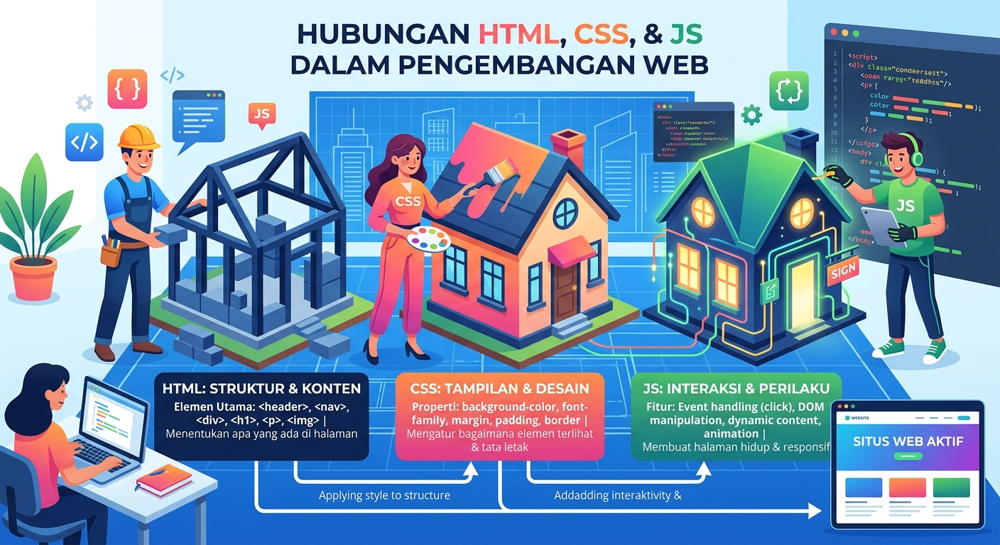

Pengenalan
Kenali dulu tujuan, kompetensi, dan cara menggunakan Multrif sebelum mulai belajar.
Tujuan Pembelajaran
Menjelaskan fungsi HTML, CSS, dan JavaScript serta peran masing masing dalam membangun sebuah halaman web, dan menulis dokumen HTML dengan struktur yang benar menggunakan tag, elemen, dan atribut secara tepat.
Menerapkan CSS untuk mengatur warna, font, jarak, border, dan tata letak, serta menulis kode JavaScript dasar yang mencakup variabel, kondisi, fungsi, event, dan DOM sehingga halaman web dapat merespons pengguna.
Kompetensi yang Dicapai
Menulis Kode HTML
Mampu menyusun dokumen HTML yang valid, lengkap dengan heading, paragraf, gambar, daftar, tabel, dan form.
Menata Tampilan dengan CSS
Mampu mengatur warna, font, jarak, border, dan tata letak elemen agar halaman terlihat rapi di berbagai ukuran layar.
Membuat Halaman Interaktif
Mampu menulis JavaScript dasar dan menghubungkan event pengguna dengan perubahan pada DOM.
Petunjuk Penggunaan Website
Buka halaman Materi lalu pilih salah satu topik, yaitu HTML, CSS, atau JavaScript. Disarankan mempelajarinya secara berurutan karena CSS dan JavaScript memakai HTML sebagai dasarnya.
Pada setiap materi, baca penjelasannya, lalu coba langsung contoh kode pada kotak simulasi yang tersedia di bagian bawah halaman.
Kerjakan latihan singkat di akhir setiap materi, lalu setelah ketiga materi selesai, kerjakan Evaluasi Akhir untuk melihat nilai dan rekomendasi materi yang perlu diulang.
Apa itu HTML, CSS, & JavaScript?
HTML
Bahasa markup untuk menyusun struktur dan isi halaman web, seperti judul, paragraf, gambar, dan form.
CSS
Bahasa untuk mengatur tampilan elemen HTML, seperti warna, ukuran, jarak, dan tata letak.
JavaScript
Bahasa pemrograman untuk menambahkan perilaku dan interaktivitas pada halaman web.
Hubungan Ketiganya
Ibarat membangun rumah, HTML adalah struktur bangunan, CSS adalah cat dan dekorasi, sedangkan JavaScript adalah sistem listrik dan otomatisasi yang membuat rumah tersebut hidup dan merespons penghuninya.
